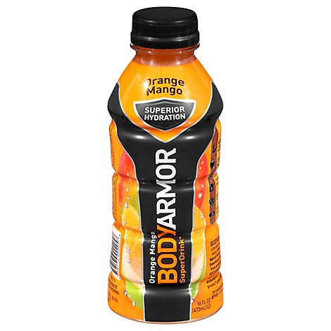
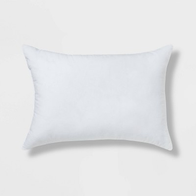

Mixed nuts are a snack food consisting of any mixture of mechanically or manually combined nuts. Common constituents are peanuts, almonds, walnuts, Brazil nuts, cashews, hazelnuts, and pecans. Mixed nuts may be salted, roasted, cooked, or blanched.

BODYARMOR is a premium sports drink that provides superior hydration. It is packed with electrolytes, coconut water and vitamins and is low in sodium and high in potassium. Created in 2011 by Mike Repole, BODYARMOR contains natural flavors and sweeteners and no colors from artificial sources.
In contemporary western culture, pillows consist of a plain or patterned fabric envelope (known as a pillowcase) which contains a soft stuffing, typically synthetic and typically standardized in sizes and shape.[4] Pillows have been historically made of a variety of natural materials and many cultures continue to use pillows made from natural materials in the world.
